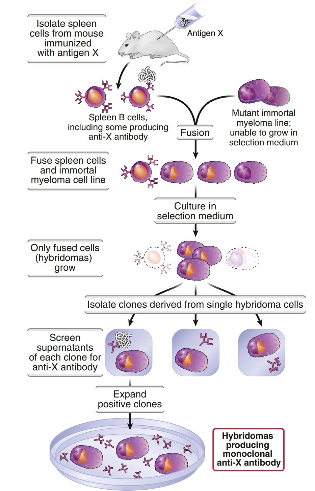
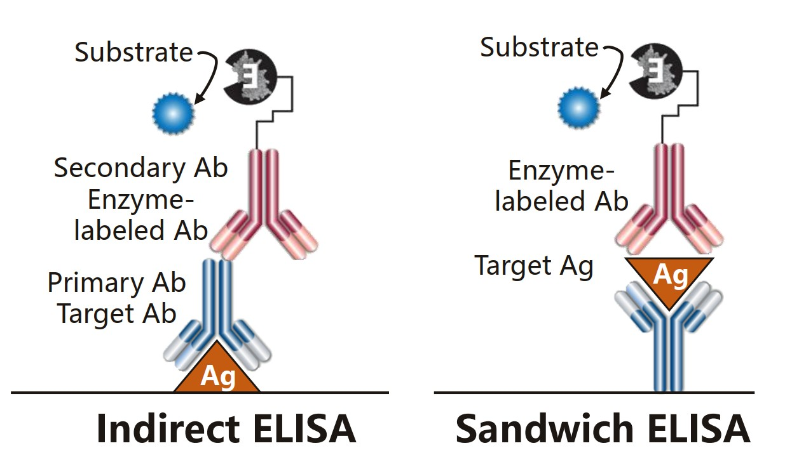
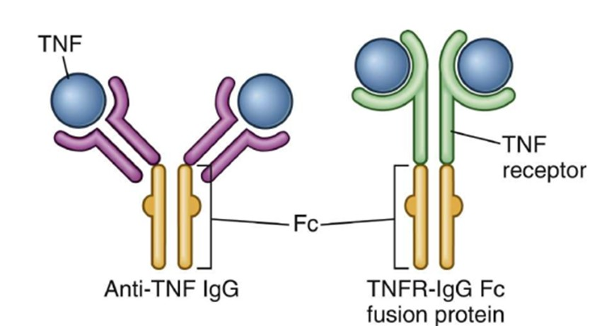
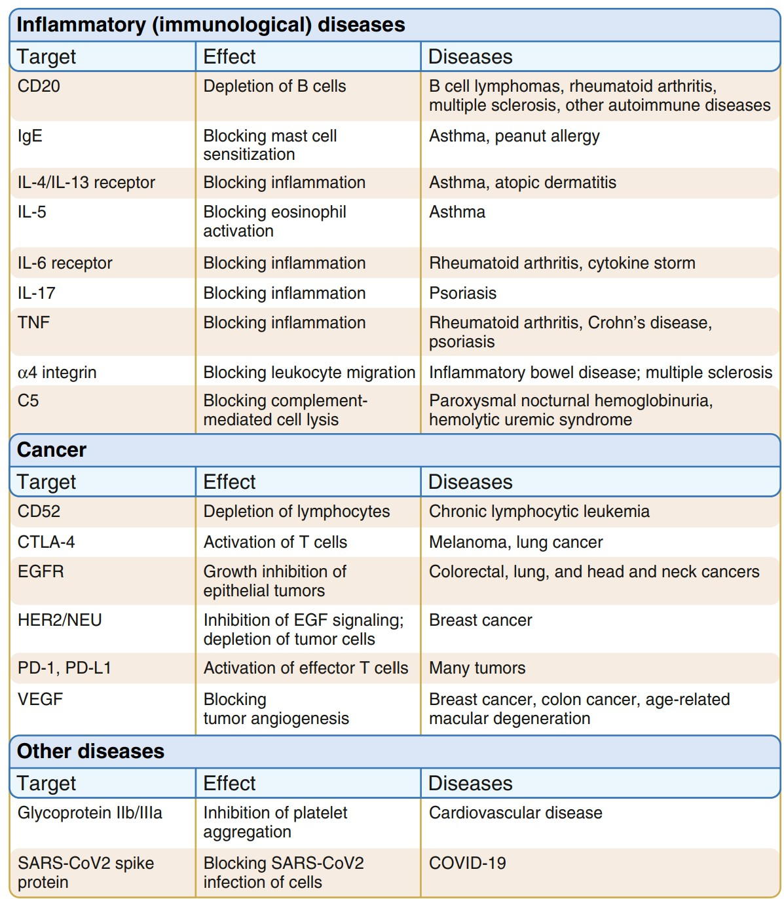
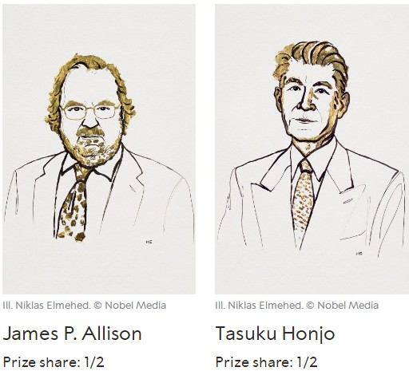

Making and Using Antibodiesساخت و کاربرد آنتیبادی
The immune system makes antibodies by the billion and we can borrow the machinery. Three generations of technology — crude serum, one clone in a dish, and a designed molecule — and each solved a specific problem the previous one had.سیستم ایمنی میلیاردها آنتیبادی میسازد و ما میتوانیم این ماشین را قرض بگیریم. سه نسل فناوری — سرم خام، یک کلون در ظرف، و مولکول طراحیشده — که هر یک مشکلی مشخص از نسل پیشین را حل کرد.
By the end of this Part you should be able toدر پایان این بخش باید بتوانید
Distinguish polyclonal from monoclonal antibody and say when each is preferable.پلیکلونال را از مونوکلونال تفکیک و بگویید هر یک کِی ترجیح دارد.
Explain what a hybridoma is and why both fusion partners are needed.توضیح دهید هیبریدوما چیست و چرا هر دو شریک ادغام لازماند.
Read a monoclonal antibody’s name and predict how immunogenic it is.نام یک آنتیبادی مونوکلونال را بخوانید و ایمنیزاییاش را پیشبینی کنید.
Fig 4.1 The same antigen, two products. Polyclonal antiserum contains antibodies from many B-cell clones, binding many different epitopes on the antigen. Monoclonal antibody is the product of one clone, binding one epitope — every molecule identical.یک آنتیژن، دو فرآورده. آنتیسرم پلیکلونال آنتیبادیهایی از کلونهای متعدد سلول B دارد که به اپیتوپهای متفاوت آنتیژن میچسبند. آنتیبادی مونوکلونال فرآوردهٔ یک کلون است و به یک اپیتوپ میچسبد — هر مولکول همسان دیگری.
Table 4.1 Three ways to get an antibodyجدول ۴.۱ — سه راه بهدستآوردن آنتیبادی
Polyclonalپلیکلونال
Monoclonalمونوکلونال
Genetically engineeredمهندسیشده
Howچگونه
Immunise an animal, bleed it, use the serumحیوانی را ایمن کنید، خونش را بگیرید، از سرم استفاده کنید
Hybridoma: fuse one immune B cell with a myeloma cellهیبریدوما: یک سلول B ایمن را با سلول میلوما ادغام کنید
Clone and modify the V and C genes; express in cultureژنهای متغیر و ثابت را کلون و اصلاح کنید؛ در کشت بیان دهید
Specificityاختصاصیت
Many epitopes — a mixtureاپیتوپهای متعدد — مخلوط
One epitope — chemically uniformیک اپیتوپ — یکدست شیمیایی
One epitope, and you choose the constant region tooیک اپیتوپ، و ناحیهٔ ثابت را هم خودتان انتخاب میکنید
Advantageمزیت
Cheap and fast; binds the antigen at many points, so it is robust to small changes in the targetارزان و سریع؛ آنتیژن را در نقاط متعدد میبندد، پس به تغییرات کوچک هدف مقاوم است
Reproducible for ever — the hybridoma is immortal, so batch 1 and batch 1000 are identicalبرای همیشه تکرارپذیر — هیبریدوما جاودان است، پس دستهٔ اول و هزارم یکساناند
Low immunogenicity in humans, and effector function can be designed in or outایمنیزایی پایین در انسان، و میتوان عملکرد اجرایی را عمداً وارد یا حذف کرد
Limitationمحدودیت
Every batch differs; cross-reactivity; the animal eventually diesهر دسته فرق دارد؛ واکنش متقاطع؛ حیوان سرانجام میمیرد
Mouse protein — the patient makes human anti-mouse antibodies (HAMA) against itپروتئین موشی — بیمار علیه آن آنتیبادی انسانی ضدموش میسازد
Expensive and slow to developگران و کند در توسعه

Fig 4.2 Making a hybridoma. Immunise a mouse, take its spleen B cells, fuse them with myeloma cells, then grow in selective medium in which only the fusions survive. Clone out single cells, screen each clone for the antibody you want, and expand the winner.ساخت هیبریدوما. موشی را ایمن کنید، سلولهای B طحالش را بگیرید، با سلولهای میلوما ادغام کنید، سپس در محیط انتخابی رشد دهید که فقط ادغامشدهها زنده میمانند. تکسلولها را کلون کنید، هر کلون را برای آنتیبادی مطلوب غربال و برنده را تکثیر کنید.
Mechanism — why fusion is necessary, and why selection worksمکانیسم — چرا ادغام لازم است و چرا انتخاب کار میکند
An immunised mouse’s spleen contains B cells making exactly the antibody you want — but a B cell in culture dies within days.You have the specificity but no way to keep it. That is the entire problem the technique solves.طحال موش ایمنشده سلولهای Bای دارد که دقیقاً آنتیبادی مطلوب شما را میسازند — اما سلول B در کشت ظرف چند روز میمیرد.اختصاصیت را دارید اما راهی برای نگهداشتنش ندارید. تمام مسئلهای که این تکنیک حل میکند همین است.
A myeloma cell is a malignant plasma cell: it grows for ever in culture, but it makes an antibody of no interest, or none at all.You have immortality but no specificity. The two cells have complementary defects.سلول میلوما یک پلاسماسل بدخیم است: برای همیشه در کشت رشد میکند، اما آنتیبادیای بیاهمیت میسازد یا اصلاً نمیسازد.جاودانگی را دارید اما اختصاصیت را نه. نقص این دو سلول مکمل یکدیگر است.
Fuse them. The hybrid — the hybridoma — inherits the B cell’s antibody gene and the myeloma’s immortality.This is the whole idea, and it won the 1984 Nobel Prize precisely because it is so simple in retrospect.ادغامشان کنید. دورگه — هیبریدوما — ژن آنتیبادی سلول B و جاودانگی میلوما را با هم به ارث میبرد.تمام ایده همین است، و دقیقاً بهدلیل همین سادگیِ در نگاه به گذشته، نوبل ۱۹۸۴ را برد.
Grow the mixture in HAT selective medium. The myeloma parent is chosen to lack an enzyme of the salvage pathway, so unfused myeloma cells die; unfused B cells die of old age; only hybrids survive, because the B cell supplies the missing enzyme and the myeloma supplies the immortality.The selection is elegant: you do not have to pick out the hybrids, you simply create conditions in which nothing else can live.مخلوط را در محیط انتخابی HAT رشد دهید. والد میلوما چنان انتخاب میشود که آنزیمی از مسیر نجات را نداشته باشد، پس میلومای ادغامنشده میمیرد؛ سلول B ادغامنشده از پیری میمیرد؛ فقط دورگهها زنده میمانند، چون سلول B آنزیم گمشده را میدهد و میلوما جاودانگی را.انتخاب، ظریف است: لازم نیست دورگهها را جدا کنید، صرفاً شرایطی میسازید که هیچچیز دیگری در آن زنده نماند.
Clone and screen. Dilute so that each well contains one cell, let it grow, and test each well’s supernatant for the antibody you want.This is what makes it monoclonal: every molecule in the final product descends from one B cell, so every molecule is identical.کلون و غربال کنید. چنان رقیق کنید که هر چاهک یک سلول داشته باشد، بگذارید رشد کند و مایع رویی هر چاهک را برای آنتیبادی مطلوب آزمایش کنید.همین است که آن را مونوکلونال میکند: هر مولکول در فرآوردهٔ نهایی از یک سلول B نازل شده، پس هر مولکول همسان دیگری است.
An immortal cell line producing an unlimited supply of a single, chemically defined antibody — the reagent on which modern diagnostics and a large part of modern therapeutics depend.یک ردهٔ سلولی جاودان که ذخیرهای بیپایان از یک آنتیبادی واحد و تعریفشدهٔ شیمیایی میسازد — معرفی که تشخیص نوین و بخش بزرگی از درمان نوین بر آن استوارند.
Historical anchor — the 1984 Nobel Prizeلنگر تاریخی — نوبل ۱۹۸۴
Niels K. Jerne, Georges J. F. Köhler and César Milstein, “for theories concerning the specificity in development and control of the immune system and the discovery of the principle for production of monoclonal antibodies”. Köhler and Milstein published the hybridoma method in 1975 and did not patent it. Every therapeutic monoclonal on the market descends from that decision.نیلز یرنه، گئورگ کولر و سزار میلشتاین، «برای نظریههایی دربارهٔ اختصاصیت در تکامل و کنترل سیستم ایمنی و کشف اصل تولید آنتیبادی مونوکلونال». کولر و میلشتاین روش هیبریدوما را در ۱۹۷۵ منتشر کردند و آن را ثبت اختراع نکردند. هر مونوکلونال درمانی موجود در بازار، از همان تصمیم نازل شده است.
Engineered antibodies — and how to read their namesآنتیبادیهای مهندسیشده — و چگونه نامشان را بخوانیم
Name decoder — therapeutic monoclonal antibodiesرمزگشای نام — آنتیبادیهای مونوکلونال درمانی
-momab
Fully mouseکاملاً موشی
Most immunogenic. Largely abandonedبیشترین ایمنیزایی. عمدتاً کنار گذاشته شده
-ximab
Chimeric — mouse V, human Cکایمریک — ناحیهٔ متغیر موشی، ثابت انسانی
rituximab, infliximabریتوکسیماب، اینفلیکسیماب
-zumab
Humanised — only the CDRs are mouseانسانیشده — فقط CDRها موشیاند
trastuzumab, bevacizumabتراستوزوماب، بواسیزوماب
-umab
Fully humanکاملاً انسانی
adalimumab, nivolumabآدالیموماب، نیوولوماب
-cept
Receptor–Fc fusion, not an antibodyادغام گیرنده با Fc، نه آنتیبادی
etanercept — a TNF receptor stuck onto an IgG Fcاتانرسپت — گیرندهٔ TNF چسبیده به Fc
Reading it: the suffix tells you how much of the molecule is mouse, and therefore how likely the patient is to raise anti-drug antibodies against it and lose the response. The progression momab → ximab → zumab → umab is the history of the field in four syllables: each step replaced more mouse sequence with human, and the whole point was to keep the mouse CDRs — the part that does the binding — while discarding the mouse framework and constant region that the immune system reacts to.خواندنش: پسوند میگوید چه مقدار از مولکول موشی است و بنابراین چقدر احتمال دارد بیمار علیه آن آنتیبادی ضددارو بسازد و پاسخ را از دست بدهد. توالی موماب ← زیماب ← زوماب ← اوماب تاریخ این حوزه در چهار هجاست: هر گام، توالی موشی بیشتری را با انسانی جایگزین کرد، و تمام هدف این بود که CDRهای موشی — بخشی که اتصال را انجام میدهد — نگه داشته شود و چارچوب و ناحیهٔ ثابت موشی که سیستم ایمنی به آن واکنش میدهد دور ریخته شود.
4.2Antibodies in the Clinic and the Labآنتیبادی در بالین و آزمایشگاه
The lecture lists four applications: diagnosis, prophylaxis, immunotherapy and scientific research. All four exploit the same property — an antibody will find one molecule in a mixture of thousands and stick to it.درس چهار کاربرد را فهرست میکند: تشخیص، پیشگیری، ایمنیدرمانی و پژوهش. هر چهار، از یک ویژگی بهره میبرند — آنتیبادی یک مولکول را در مخلوطی از هزاران مولکول مییابد و به آن میچسبد.

Fig 4.3ELISA, two formats. Indirect — coat the plate with antigen, add patient serum, detect bound antibody with an enzyme-labelled secondary: this asks does the patient have the antibody?Sandwich — capture antigen between two antibodies: this asks is the antigen present, and how much?الایزا، دو قالب. غیرمستقیم — پلیت را با آنتیژن بپوشانید، سرم بیمار را بیفزایید، آنتیبادی متصل را با ثانویهٔ نشاندار آنزیمی آشکار کنید: این میپرسد آیا بیمار آن آنتیبادی را دارد؟ساندویچی — آنتیژن را میان دو آنتیبادی به دام بیندازید: این میپرسد آیا آنتیژن هست و چقدر؟

Fig 4.4 Two ways to block one cytokine. Anti-TNF IgG binds TNF directly. A TNFR–IgG Fc fusion protein instead presents the receptor itself as a decoy, dimerised and given a long half-life by the Fc it is fused to. Both neutralise TNF; only one is an antibody.دو راه مسدودکردن یک سایتوکاین. IgG ضد TNF مستقیماً به TNF میچسبد. پروتئین ادغامی گیرندهٔ TNF با Fc بهجایش خود گیرنده را بهعنوان طعمه عرضه میکند، دیمرشده و با نیمهعمری طولانی که Fc به آن داده است. هر دو TNF را خنثی میکنند؛ فقط یکی آنتیبادی است.

Fig 4.5 Therapeutic monoclonals in use, by target and disease. Read the first column as a list of the molecules immunology has identified as worth blocking — the table is, in effect, immunology’s results made into drugs.مونوکلونالهای درمانی در حال استفاده، بر اساس هدف و بیماری. ستون نخست را فهرستی از مولکولهایی بخوانید که ایمونولوژی آنها را ارزشمند برای مسدودکردن یافته — این جدول در عمل، نتایج ایمونولوژی است که به دارو بدل شده.
Clinical Correlation — the 2018 Nobel Prize and checkpoint blockadeارتباط بالینی — نوبل ۲۰۱۸ و مسدودسازی ایستهای بازرسی

Fig 4.6James P. Allison and Tasuku Honjo, Nobel Prize 2018 — the reason a chapter on antibody engineering now ends in oncology.جیمز پی. آلیسون و تاسوکو هونجو، نوبل ۲۰۱۸ — دلیل اینکه فصلی دربارهٔ مهندسی آنتیبادی اکنون به انکولوژی ختم میشود.
James P. Allison and Tasuku Honjo won the 2018 Nobel Prize “for their discovery of cancer therapy by inhibition of negative immune regulation.” Read that phrase carefully, because it describes an inversion. Earlier cancer immunotherapy tried to push the accelerator — give cytokines, give vaccines, stimulate T cells. Allison and Honjo showed that tumours survive by engaging the brakes that normally stop T cells attacking self: CTLA-4 and PD-1. The therapy is therefore a monoclonal antibody that blocks a brake, not one that stimulates anything — ipilimumab against CTLA-4, nivolumab and pembrolizumab against PD-1. The side effects follow directly and predictably: release the brakes on self-tolerance and you get autoimmune colitis, thyroiditis, hepatitis and dermatitis. The mechanism predicts the toxicity, which is the sign that the mechanism is right.جیمز آلیسون و تاسوکو هونجو نوبل ۲۰۱۸ را بردند «برای کشف درمان سرطان از راه مهار تنظیم منفی ایمنی». این عبارت را با دقت بخوانید، چون یک وارونگی را توصیف میکند. ایمنیدرمانی پیشین سرطان میکوشید پدال گاز را فشار دهد — سایتوکاین بدهد، واکسن بدهد، سلول T را تحریک کند. آلیسون و هونجو نشان دادند تومورها با درگیرکردن ترمزهایی زنده میمانند که بهطور طبیعی مانع حملهٔ سلول T به خودی میشوند: CTLA-4 و PD-1. پس درمان، آنتیبادی مونوکلونالی است که ترمز را مسدود میکند، نه آنکه چیزی را تحریک کند. عوارض جانبی مستقیماً و قابلپیشبینی از آن نتیجه میشوند: ترمزهای تحمل خودی را رها کنید، کولیت، تیروئیدیت، هپاتیت و درماتیت خودایمن میگیرید. مکانیسم، سمیت را پیشبینی میکند — و همین نشانهٔ درستبودن مکانیسم است.